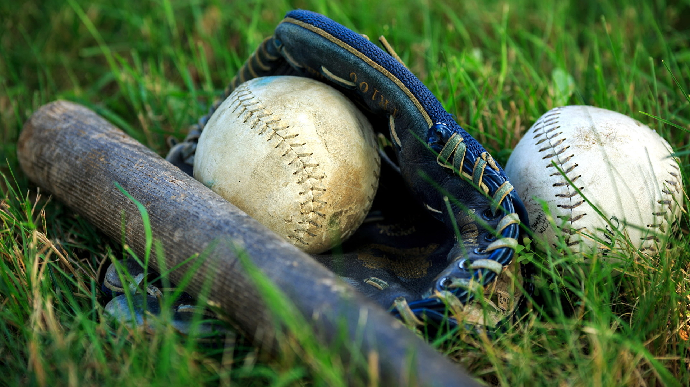
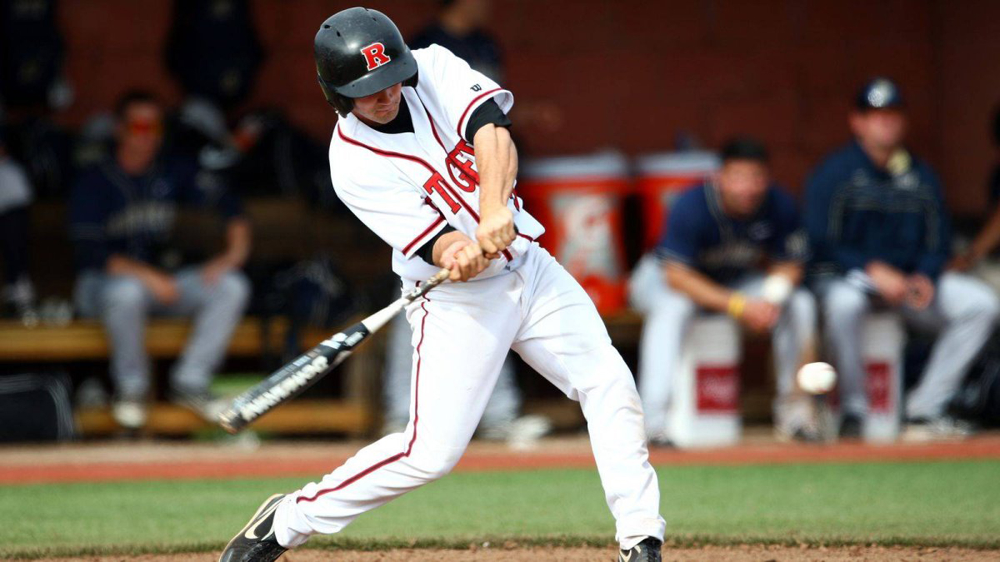
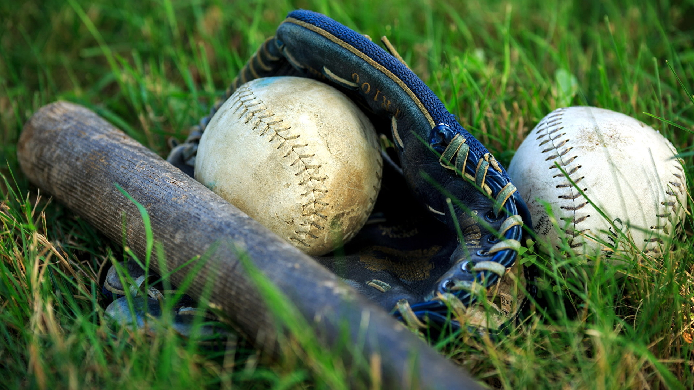
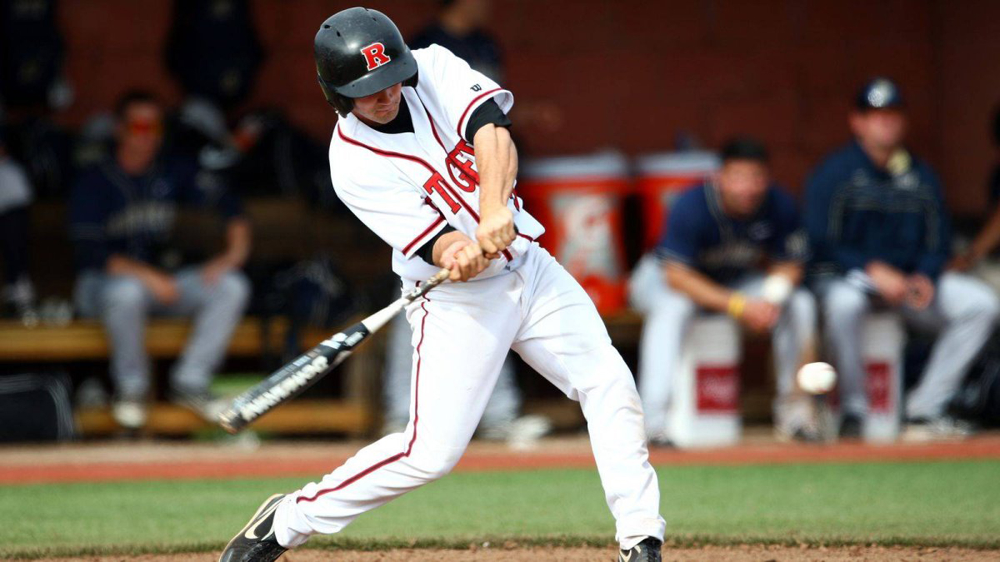
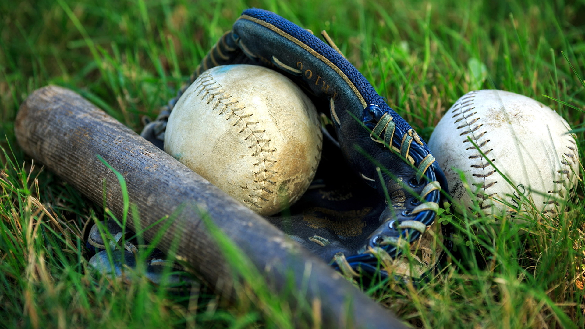
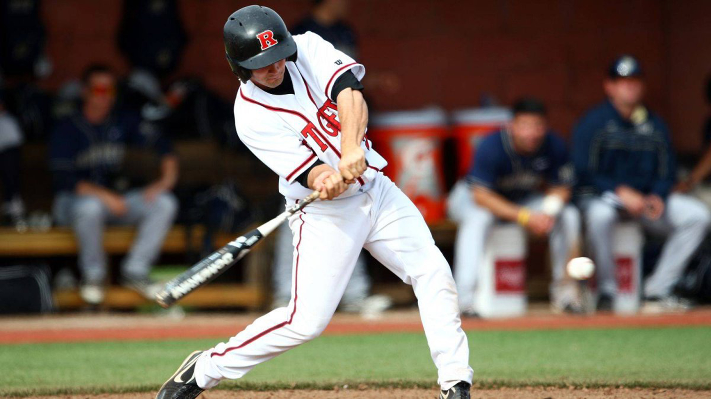

⬆


Бейсбо́л — спортивна гра з м'ячем і битою. Гра відбувається між двома командами з дев'яти гравців, які по черзі грають у захисті та в нападі.
Завдання команди, яка грає в нападі, — заробити пробіжку (англ. run). Для цього гравцям потрібно відбивати битою м'яч, який кидає подава́льник (англ. pitcher), і тоді послідовно пробігти через чотири бази у напрямку проти годинникової стрілки. Є чотири бази: перша, друга, третя і домашня. Пробіжка зараховується, якщо гравець пробіг через усі бази і повернувся на домашню.
Під час гри в нападі гравці по черзі грають проти подава́льника команди, яка захищається. Завдання подава́льника — не дати заробити пробіжку. Для цього йому потрібно заробити «аут», «вивести з гри» гравця, що стоїть на відбиванні, будь-яким із декількох способів. Гравець нападаючої команди, який досяг бази, пізніше може спробувати досягти наступних баз під час гри в нападі його партнерів по команді. Коли команда, яка захищається, заробить три аути, команди міняються позиціями. Команда-гість грає в нападі першою. Коли команди по черзі зіграли в нападі і захисті, це складає собою один ігровий відрізок (англ. inning). Гра складається з дев'яти відрізків. Перемагає команда, яка на момент завершення гри заробила більше пробіжок.
Бейсбол розвинувся зі старіших ігор з м'ячем і битою, які існували в Англії до середини XVIII століття. Іммігранти привезли гру до Північної Америки, де поступово була розроблена її сучасна версія. До кінця XIX століття бейсбол став національним видом спорту у США.
Бейсбол популярний у Північній Америці, деяких регіонах Центральної та Південної Америки, Карибах, Східній Азії, особливо у Японії.
Бейсбол є олімпійським видом спорту. Входив до програми Літніх олімпійських ігор з 1992 (Барселона) по 2008 рік (Пекін).
Різновид бейсболу з більшим м'ячем називається софтболом.
Вважається «батьком» сучасного бейсболу
Точно відслідкувати розвиток бейсболу із старовинних ігор з битою і м'ячем важко. Французький рукопис 1344 року містить ілюстрацію, на якій зображені священики, що грають у гру, можливо, la soule, що схожа на бейсбол. Інші старі французькі ігри, такі як théque, la balle au bâton і la balle empoisonée також мають деяку схожість з бейсболом. Дослідники дійшли згоди, що сучасний бейсбол розвинувся у Північній Америці з старішої гри раундерз, популярної у Великій Британії та Ірландії. Проте Девід Блок у праці «Бейсбол у часи, коли про нього не знали: Пошук коренів гри» (англ. Baseball Before We Knew It: A Search for the Roots of the Game) (2005) припускає, що гра виникла в Англії, і це підтверджують історичні свідчення. Блок стверджує, що раундерз і ранній бейсбол насправді були регіональними версіями однієї гри і що безпосередніми попередниками бейсболу були англійські ігри стулбол і тат-бол. Довгий час вважали, що крикет також походить від цих ігор, але виявлені у 2009 році свідчення вказують на те, що крикет міг бути завезений до Англії з Фландрії.
Довгий час вважався правдивим «Міф про Даблдея» — історія про те, що Абнер Даблдей винайшов бейсбол у 1839 році у Куперстауні (Нью-Йорк). З часом історики бейсболу викрили та розвінчали цю легенду.
У 1845 році житель Нью-Йорка, член клубу «Knickerbockers» Александр Картрайт уклав правила гри в бейсбол, так звані «Нікербокерзські правила». Ці правила забороняли поширену в той час практику вибивати ранера, влучивши по ньому м'ячем. Таким чином правила посприяли використанню меншого і твердішого м'яча. Вони були більш наближені до сучасної гри, хоча і далі, наприклад, відбивальник вибував, якщо м'яч було спіймано після одного відскоку, дозволялася тільки подача знизу. 19 червня 1846 відбувся перший матч за правилами Картрайта. Хоча, за деякими даними, «Нью-Йорк Нікербокерз» грали ще в 1845 році, матч, який на даний час вважається першим офіційно зареєстрованим бейсбольним матчем в історії США, відбувся 19 червня 1846 року в місті Гобокен, Нью-Джерсі: «New York Nine» переміг «Нікербокерз» 23-1, у чотирьох інінґах. Нікербокерзські правила стали основою для розвитку сучасних правил протягом другої половини століття.

Рукавиця
М'яч
Кетчер
Бита